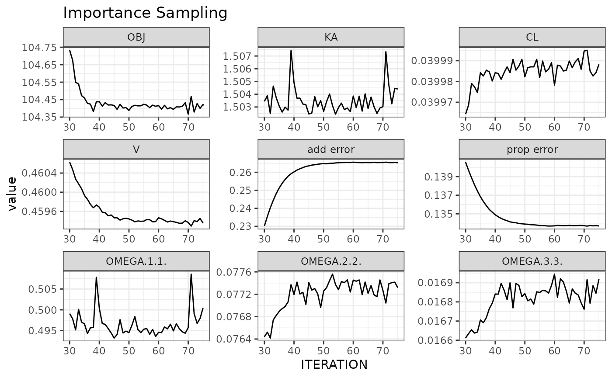
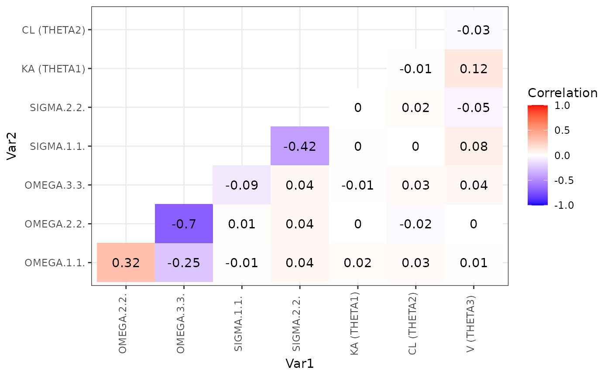

NMproject’s initial outing (the alpha interface) was developed in AZ and internally had 83% voluntary user retention (“user” = someone with 5+ separate model development workflows). NMproject’s main objective is industrialisation via script based model development.
The beta interface is a completely new syntax that address several shortcoming of the previous syntax and expands functionality.
So why NMproject?
Go from code library templates (shiny interface) to a working parent NONMEM model quickly and entirely within R. See demo.
Use R functions and tracked manual editing to create NONMEM runs. NMproject is the only NONMEM interface (that I know of) that tracks manual edits to NONMEM code in the form of reusable patches. It is also the only R package (that I know of) with a vectorized model object allowing single runs to be handled in the same way as groups of runs.
Create end-to-end model development workflows entirely within R without any additional effort. Run caching encourages you to re-execute scripts and rebuild objects frequently to ensure your workflow contains no reproduciblity breaks. Use workflows to pre-program analyses for project decision points, and repeat workflows to greatly accelerate re-analysis with updated datasets.
See impactful oncology example where the commitment to pre-program in NMproject and deliver analysis in stats-like timelines got us onto formal go-nogo: https://youtu.be/QVw28Im3Zz0)
R markdown friendly. Pipe friendly. Create human readable model development logs for other people (or even yourself in 6 months) to read/refresh.
Prerequisites: NMproject targetted towards mid to upper level R/NONMEM users. If you know what a pipe is, what knitr is, you should be good. If you know dplyr you’ll be able to use the advanced functionality to complex workflows
The easiest way to familiarise your with NMproject is to follow through the demo.
First create a new NMproject (FILE -> New Project -> New Directory -> New NMproject). You’ll see a clean analysis directory with empty subfolders. Run the following in the new R session:
This will population the Scripts directory with scripts, and deposit the Theopp dataset into the SourceData subdirectory.
The scripts are numbered s01…..Rmd, s02….Rmd etc., and are designed to be read and run in order. This is the best way to familiarize yourself. The scripts can also be used as template for your own model development
There is nothing mandating the use of R markdown in NMproject. You can use scripts. However R markdown documents produce nice sharable model development logs which provide a readable description of what steps were performed and in what order.
It is advisable to always start from a template. Templates can be accessed in New Rmarkdown -> From Template. One example template is model generic which can be used to get started with our dataset cleaning and exploratory plotting.
Your first script in performing an analysis will probably be a dataset assembly or dataset cleaning. The intent of the SourceData directory is to serve as an entry point of raw or externally produced dataset into your analysis directory.
It is best practice to use relative paths in your code where possible and to avoid using setwd() commands to change the working directory. E.g. to read a data set in the SourceData directory, use read.csv("SourceData/data.csv").
The write_derived_data() function can be used to save the NONMEM ready dataset into the DerivedData directory:
d %>% write_derived_data("DerivedData/data.csv")See the demo for how/why to create bootstrapped datasets before beginning model development.
New Rmarkdown -> From Template -> Model development will get you started with a model development log file.
It’s always best to start with NONMEM template too. Search the code library and bring into staging area of analysis project using the code_library addin:
One of the templates is Models/ADVAN2.mod. Select it, preview() it and then stage() by clicking the buttons and then closing the app.
The model will be in the staging area: staging/Models/ADVAN2.mod, not Models/ADVAN2.mod. Files in the staging area are not to be modified. It’s similar to the SourceData directory in that sense. This is to ensure that we can make changes to ADVAN2.mod in the code library without breaking old analyses that depended on it.
The other important component to understand is that control files are only written to the Models subdirectory just before running nonmem via the run_nm() command. Prior to this, control file information is stored within the object itself.
Let’s create our first NONMEM object with new_nm(). This will be a parent run to all other runs and thus requires more set up than other runs. Subsequent child objects will inherits characteristics of the parent.
Three arguments are required to create the parent, a run identifier, run_id, a control file it’s based on, based_on, and a (relative) dataset path data_path:
m1 <- new_nm(run_id = "m1",
based_on = "staging/Models/ADVAN2.mod",
data_path = "DerivedData/data.csv")
m1## List of 1
## $ execute.Models/m1
## ..$ type : chr "execute"
## ..$ run_id : chr "m1"
## ..$ run_in : chr "Models"
## ..$ executed : logi FALSE
## ..$ ctl_contents: chr collapsed - view with ctl_contents()
## ..$ ctl_orig : chr collapsed - view with ctl_orig()
## ..$ data_path : chr "DerivedData/data.csv"
## ..$ cmd : chr "execute {ctl_name} -dir={run_dir}"
## ..$ cores : int 1
## ..$ run_dir : chr "m1"
## ..$ ctl_name : chr "runm1.mod"
## ..$ results_dir : chr "Results"
## ..$ unique_id : chr "execute.Models/m1"
## ..$ lst_path : chr "m1/NM_run1/psn.lst"
## ..- attr(*, "class")= chr [1:3] "nm_execute" "nm_generic" "list"
## - attr(*, "class")= chr [1:2] "nm_list" "list"Display the object by typing m1 in the console. Notice that the run_in field is point to Models. This can be changed by piping the function of the same name e.g.
m1 <- new_nm(run_id = "m1",
based_on = "staging/Models/ADVAN2.mod",
data_path = "DerivedData/data.csv") %>%
run_in("NONMEM/base_model")will run all models in a subdirectory of a subdirectory NONMEM/base_model instead. Any field can by modified using a similar heuristic.
To extract a field (rather than set a field) use the same function without additional arguments:
m1 %>% run_in()## [1] "NONMEM/base_model"For now though, lets stay with the default run_in location.
NOTE: the field ctl_name refers to the name of the control that will be created. This will only be created when it the model is run with the run_nm() function (described later). For now, the control file contents reside inside the object. To view these you can use show_ctl(m1), or text(m1).
A few automatic edits from the staged control file and a compact representation of these changes can be shown by highlighting the above code and selecting the nm_diff addin which show what has been changed.
Learning how to read to diffs will be an important skill in NMproject you will pick up over time. Notice how the $DATA has been updated to refer to the new location.
The default cmd() field of the object is execute {ctl_name} -dir={run_dir}. The braces are referred to as glue fields using the glue package. These refer to field names of the object that will be substituted in. For completeness on the next step we will explicitly set this to ensure our model development is easy to read.
m1 <- new_nm(run_id = "m1",
based_on = "staging/Models/ADVAN2.mod",
data_path = "DerivedData/data.csv") %>%
cmd("execute {ctl_name} -dir={run_dir}")The final steps to gets the NONMEM model ready is to fill in the remaining blanks in the template. They are the $INPUT and $THETA, $OMEGA. For this we will use the fill_input() and init_theta() and init_omega() before piping into our run_nm() command.
m1 <- new_nm(run_id = "m1",
based_on = "staging/Models/ADVAN2.mod",
data_path = "DerivedData/data.csv") %>%
cmd("execute {ctl_name} -dir={run_dir}") %>%
fill_input() %>%
init_theta(init = c(-2, 0.5, 1)) %>%
init_sigma(init = c(0.1, 0.1)) %>%
run_nm()In a cluster environment it is especially important to be able to diagnose data and control file issues before sending jobs off to the grid. Otherwise, you often need to wait minutes for errors that can be spotted immediately. It’s therefore highly recommended to make use of the nm_tran addin. This will only run NMTRAN checks to find control file syntax errors and dataset errors. It will not run nonmem itself. To use this addin, highlight the above code and select the nm_tran addin near the top of the RStudio GUI.
Often there will not be the functions to do the control file manipulation you want. Although it is preferable to stick to automatic control file manipulation functions, you can do full tracked manual_edits via the addin menu. Again, just highlight the code, click the addin and follow the instructions:
To view all runs in the workspace and track progress:
shiny_nm()To do basic goodness of fit open the post processing Rmarkdown template, follow instructions, customise your template save it (e.g. as Scripts/basic_gof.Rmd) and run in your log script with
m1 <- m1 %>% nm_render("Scripts/basic_gof.Rmd")It will create the output in Results (or results_dir(m1))
If we already have a parent run m1 using ADVAN2 TRANS1, we can create a child() run that uses TRANS2 using subroutine():
m2 <- m1 %>% child() %>%
subroutine(trans = 2) %>%
run_nm()View exactly what’s been changed by highlighting the above code in RStudio and clicking the nm_diff addin to see what’s been changed before running. Here, changes will be in the $SUB, $PK and $THETA.
To add a covariate using PsN coding conventions use add_cov():
m2WT <- m2 %>% child(run_id = "m2WT") %>%
add_cov(param = "CL", cov = "WT", state = "linear") %>%
run_nm()Apply a fully editable goodness of fit R markdown template to both runs m2 and m3:
c(m1, m2) %>% nm_render("Scripts/basic_gof.Rmd")
## will produce two run specific html reports in the "Results" directory for run evaluationNote: c(m1, m3) is a vector object of 2 NONMEM runs. We’ll touch more on this later.
Evaluate and compare runs on the fly with the following commands
## parameter type unit trans Models/m2 Models/m2WT
## 1 KA THETA h-1 LOG 1.5 (21.7%) 1.5 (21.6%)
## 2 CL THETA h-1 LOG 0.04 (8.33%) 0.0398 (7.83%)
## 3 V THETA L LOG 0.461 (4.65%) 0.459 (4.66%)
## 11 TVCLWTlinear THETA <NA> <NA> -0.0115 (0.00874)
## 4 IIV_KA OMEGAVAR CV% LOG 80.6 (21.2%) 80.5 (22.5%)
## 5 IIV_CL OMEGAVAR CV% LOG 28.2 (27.9%) 26.1 (34.9%)
## 6 IIV_V OMEGAVAR CV% LOG 12.9 (44.6%) 13 (44.5%)
## 7 prop error SIGMA SD <NA> 0.141 (10.3%) 0.134 (12.1%)
## 8 add error SIGMA SD <NA> 0.229 (20%) 0.264 (25.7%)
## 9 OBJ OBJ <NA> 104.823 102.719
## 10 CONDNUM CONDNUM <NA> 6.63 (0) 7.75 (0)
plot_iter(m2, skip = 10) ## skip first 10 interations 
covariance_plot(m2)
However these are better placed inside templates to enable rapid and consistent re-use.
Create a simulation run using update_parameters() and convert_to_simulation(). Apply vpc and ppc diagnostics
m2s <- m2 %>% child(run_id = "m2s") %>%
update_parameters(m2) %>%
convert_to_simulation(subpr = 50) %>%
run_nm()
m2s %>% nm_render("Scripts/basic_vpc.Rmd")
m2s %>% nm_render("Scripts/basic_ppc.Rmd")Don’t forget to comment your code with your decision making.
m1 %>% ls_tempfiles() ## will list all temporary files associate with run m1
## remove all temporary files associated with m1
m1 %>% ls_tempfiles() %>% unlink()
## Not specifying an argument will list temporary files of all runs
ls_tempfiles()Two fields parafile and cores when combined with a suitable cmd can enable runs to be executed in parallel using PsN.
The package rsample can be used to create bootstrap datasets in your initial data manipulation scripts. The following is an example bootstrap dataset being prepared with stratification on SEX and bodyweight WTC categorised in two categories
d <- d %>%
mutate(WT_C = cut(WT, breaks = 2, labels = FALSE),
STRATA = paste(SEX, WT_C, sep = "_"))
d_id <- d %>% distinct(ID, STRATA)
set.seed(123)
## create large set of resamples (to enable simulation to grow without ruining seed)
bootsplits <- rsample::bootstraps(d_id, 100, strata = "STRATA")
dir.create("DerivedData", showWarnings = FALSE)
bootsplits %>% saveRDS("DerivedData/bootsplit_data.csv.RData")In a model development script, the following, performs a 100 sample bootstrap of model m1
m1_boot <- m1 %>% make_boot_datasets(samples = 100, overwrite = TRUE)
m1_boot$m %>% run_nm()
## the following bootstrap template will wait for results to complete
m1_boot$m %>% nm_list_render("Scripts/basic_boot.Rmd")Results can be viewed in Results/basic_boot.m1.html.
The functions init_theta, init_omega and init_sigma can be used to get and set initial estimation, parameter bounds, names, units, etc. The work much like the functions used to access fields of the nm object
## return a tibble version of $OMEGA with init_omega()
io <- m1 %>% init_omega()
io ## $`execute.Models/m1`
## name omega1 omega2 lower init upper block mblock FIX unit trans line pos
## 1 <NA> NA NA NA NA NA 1 NA FALSE <NA> <NA> 1 1
## 2 IIV_KA 1 1 NA 0.1 NA 1 1 FALSE <NA> LOG 2 1
## 3 IIV_K 2 2 NA 0.1 NA 2 1 FALSE <NA> LOG 3 1
## 4 IIV_V 3 3 NA 0.1 NA 3 1 FALSE <NA> LOG 4 1
## 5 <NA> NA NA NA NA NA NA NA FALSE <NA> <NA> 5 1
## orig_line orig_pos
## 1 1 1
## 2 2 1
## 3 3 1
## 4 4 1
## 5 5 1Note that io is a list of a data.frame. This makes manipulation a bit more difficult, but referring to io[[1]] instead io will allows you to manipulate io with R’s standard data.frame manipulation functions. There are also built in functions like block and unblock (to create $OMEGA BLOCKS for correlated random effects).
io <- io %>% block(c(2,3)) ## make block out ETA 2 and 3
## put modified io wit
m1 <- m1 %>% init_omega(io)
m1 %>% dollar("OMEGA")## $`execute.Models/m1`
## 1| $OMEGA
## 2| 0.1 ; IIV_KA ; LOG
## 3| $OMEGA BLOCK (2)
## 4| 0.1 ; IIV_K ; LOG
## 5| 0.01 0.1 ; IIV_V ; LOG
## for demo purposes we'll reverse the process with unblock()
io <- m1 %>% init_omega()
io <- io %>% unblock(c(2,3))
m1 <- m1 %>% init_omega(io)
m1 %>% dollar("OMEGA")## $`execute.Models/m1`
## 1| $OMEGA
## 2| 0.1 ; IIV_KA ; LOG
## 3| 0.1 ; IIV_K ; LOG
## 4| 0.1 ; IIV_V ; LOGTo modify initial estimates, we’ll use the mutate like behaviour of init_* functions. We will modify the init by referencing itself. We’ll modified all our fixed effects (log transformed) by 30%
m1 <- m1 %>% init_theta(init = rnorm(init, mean = init, sd = 0.3))View with m1 %>% dollar("THETA").
The basic nm object is fully vectorized. To see this compare the following two outputs
m1## List of 1
## $ execute.Models/m1
## ..$ type : chr "execute"
## ..$ run_id : chr "m1"
## ..$ run_in : chr "Models"
## ..$ executed : logi TRUE
## ..$ ctl_contents: chr collapsed - view with ctl_contents()
## ..$ ctl_orig : chr collapsed - view with ctl_orig()
## ..$ data_path : chr "DerivedData/data.csv"
## ..$ cmd : chr "execute runm1.mod -dir=m1"
## ..$ cores : int 1
## ..$ run_dir : chr "m1"
## ..$ ctl_name : chr "runm1.mod"
## ..$ results_dir : chr "Results"
## ..$ unique_id : chr "execute.Models/m1"
## ..$ lst_path : chr "m1/NM_run1/psn.lst"
## ..- attr(*, "class")= chr [1:3] "nm_execute" "nm_generic" "list"
## - attr(*, "class")= chr [1:2] "nm_list" "list"
c(m1, m2)## List of 2
## $ execute.Models/m1
## ..$ type : chr "execute"
## ..$ run_id : chr "m1"
## ..$ run_in : chr "Models"
## ..$ executed : logi TRUE
## ..$ ctl_contents: chr collapsed - view with ctl_contents()
## ..$ ctl_orig : chr collapsed - view with ctl_orig()
## ..$ data_path : chr "DerivedData/data.csv"
## ..$ cmd : chr "execute runm1.mod -dir=m1"
## ..$ cores : int 1
## ..$ run_dir : chr "m1"
## ..$ ctl_name : chr "runm1.mod"
## ..$ results_dir : chr "Results"
## ..$ unique_id : chr "execute.Models/m1"
## ..$ lst_path : chr "m1/NM_run1/psn.lst"
## ..- attr(*, "class")= chr [1:3] "nm_execute" "nm_generic" "list"
## $ execute.Models/m2
## ..$ type : chr "execute"
## ..$ run_id : chr "m2"
## ..$ run_in : chr "Models"
## ..$ parent_run_id : chr "m1"
## ..$ parent_run_in : chr "Models"
## ..$ parent_ctl_name : chr "runm1.mod"
## ..$ parent_results_dir: chr "Results"
## ..$ executed : logi TRUE
## ..$ ctl_contents : chr collapsed - view with ctl_contents()
## ..$ ctl_orig : chr collapsed - view with ctl_orig()
## ..$ data_path : chr "DerivedData/data.csv"
## ..$ cmd : chr "execute runm2.mod -dir=m2"
## ..$ cores : int 1
## ..$ run_dir : chr "m2"
## ..$ ctl_name : chr "runm2.mod"
## ..$ results_dir : chr "Results"
## ..$ unique_id : chr "execute.Models/m2"
## ..$ lst_path : chr "m2/NM_run1/psn.lst"
## ..- attr(*, "class")= chr [1:3] "nm_execute" "nm_generic" "list"
## - attr(*, "class")= chr [1:2] "nm_list" "list"Both are nm objects with length 1 and 2, respectively. We used the c(m1, m2) above when we wanted to use nm_render() on both runs. We didn’t need to write any loops or special code to handle this because nm objects and the functions that operate on them have been designed with parallelisation in mind. This is because in pharmacometrics we are often dealing with multiple models, perhaps moreso than other statistical modelling disciplines.
The vectorized nature of the nm object is particularly powerful when used in conjuction with dplyr. To demonstrate, lets repeat the the previous initial perturbation exercise, but create 5 runs each with their own perturbed initial estimates.
The basic idea is to contruct a tibble (if you are unfamiliar with tibbles, they are a tidyverse expansion of the concept of a data.frame), and then use a dplyr::mutate statement to construct a column vector of nm objects. Below the column vector is produced by starting with the parent object m1 and then supplying a vector rather than a scalar to the child() function. Since the rep column is length 5, this will make the nm_object length 5.
dp <- tibble(rep = 1:5)
dp$m <- m1 %>% ## start with parent - m1 is length 1
child(run_id = dp$rep) %>% ## now object is length = length(dp$rep) = 5
init_theta(init = rnorm(init, mean = init, sd = 0.3)) %>% ## vectorized operation
run_nm() ## run all 5 runsView dp to see a tibble with two columsn rep and m. View the new $THETA statements with dp$m %>% dollar("THETA").
An alternative but equivalent way of writing the above is to use dplyrs mutate statement to create the m column
dp <- tibble(rep = 1:5) %>%
mutate(
m = m1 %>% ## start with parent - m1 is length 1
child(run_id = rep) %>% ## now object is length = length(dp$rep) = 5
init_theta(init = rnorm(init, mean = init, sd = 0.3))
)
## the m column of dp is a nm object vector, display all $THETAs like this
dp$m %>% dollar("THETA")
## run all runs in dp$m with the normal syntax
dp$m %>% run_nm()The reset of the code in this vignette will use the dplyr layout.
Note that here the functions init_theta, dollar and run_nm were all operating in a vectorized fashion
Lets expand the earlier subroutine example to build a vector of runs that test multiple different ADVANs and TRANS at the same time.
We’ll use a similar structure to the previous section using .available_advans to list all available advans, filter to isolate specific advans, and mutate and subroutine() to perform the control file manipulation function.
Then we’ll display all the $PK subroutines to view the changes.
.available_advans ## display available advans## # A tibble: 20 x 6
## advan trans cmt oral params label
## <dbl> <dbl> <dbl> <lgl> <chr> <chr>
## 1 1 1 1 FALSE K,V a1t1
## 2 1 2 1 FALSE CL,V a1t2
## 3 2 1 1 TRUE KA,K,V a2t1
## 4 2 2 1 TRUE KA,CL,V a2t2
## 5 3 1 2 FALSE K,K12,K21,V a3t1
## 6 3 3 2 FALSE CL,Q,V,VSS a3t3
## 7 3 4 2 FALSE CL,Q,V1,V2 a3t4
## 8 4 1 2 TRUE KA,K,K23,K32,V2 a4t1
## 9 4 3 2 TRUE KA,CL,Q,V,VSS a4t3
## 10 4 4 2 TRUE KA,CL,Q,V2,V3 a4t4
## 11 5 1 NA NA KXY,VX a5t1
## 12 6 1 NA NA KXY,VX a6t1
## 13 7 1 NA NA KXY,VX a7t1
## 14 8 1 NA NA KXY,VX a8t1
## 15 9 1 NA NA KXY,VX a9t1
## 16 11 1 3 FALSE K,K12,K21,K13,K31,V a11t1
## 17 11 4 3 FALSE CL,Q2,V1,V2,Q3,V3 a11t4
## 18 12 1 3 TRUE KA,K,K23,K32,K24,K42,V2 a12t1
## 19 12 4 3 TRUE KA,CL,Q3,V2,V3,Q4,V4 a12t4
## 20 13 1 NA NA KXY,VX a13t1
dt <- .available_advans %>%
## filter only for oral dosing advans
filter(oral %in% TRUE) %>%
## mutate state create a column vector m of nm objects
## first step is to create children runs from the parent object m1
## this is done by supplying a vector of run_ids to the child() function
mutate(m = m1 %>% ## start with parent m1 again
child(run_id = label) %>% ## create multiple children using label column
subroutine(advan = advan, trans = trans) ## set subroutine using advan and trans columns
)
## view the $PK blocks of each
dt$m %>% dollar("PK")## $`execute.Models/a2t1`
## 1| $PK
## 2|
## 3| TVKA=EXP(THETA(1))
## 4| MU_1=LOG(TVKA)
## 5| KA = EXP(MU_1+ETA(1))
## 6|
## 7| TVK=EXP(THETA(2))
## 8| MU_2=LOG(TVK)
## 9| K = EXP(MU_2+ETA(2))
## 10|
## 11| TVV=EXP(THETA(3))
## 12| MU_3=LOG(TVV)
## 13| V = EXP(MU_3+ETA(3))
## 14|
## 15| CL = K*V
## 16|
## 17| S2 = V
## 18|
##
## $`execute.Models/a2t2`
## 1| $PK
## 2|
## 3| TVKA=EXP(THETA(1))
## 4| MU_1=LOG(TVKA)
## 5| KA = EXP(MU_1+ETA(1))
## 6|
## 7| TVCL=EXP(THETA(2))
## 8| MU_2=LOG(TVCL)
## 9| CL = EXP(MU_2+ETA(2))
## 10|
## 11| TVV=EXP(THETA(3))
## 12| MU_3=LOG(TVV)
## 13| V = EXP(MU_3+ETA(3))
## 14|
## 15| ; CL = K*V
## 16|
## 17| S2 = V
## 18|
##
## $`execute.Models/a4t1`
## 1| $PK
## 2|
## 3| TVKA=EXP(THETA(1))
## 4| MU_1=LOG(TVKA)
## 5| KA = EXP(MU_1+ETA(1))
## 6|
## 7| TVK=EXP(THETA(2))
## 8| MU_2=LOG(TVK)
## 9| K = EXP(MU_2+ETA(2))
## 10|
## 11| TVV2=EXP(THETA(3))
## 12| MU_3=LOG(TVV2)
## 13| V2 = EXP(MU_3+ETA(3))
## 14|
## 15| CL = K*V2
## 16|
## 17| S2 = V2
## 18|
## 19| TVK23=EXP(THETA(4))
## 20| MU_4=LOG(TVK23)
## 21| K23 = EXP(MU_4+ETA(4))
## 22| TVK32=EXP(THETA(5))
## 23| MU_5=LOG(TVK32)
## 24| K32 = EXP(MU_5+ETA(5))
##
## $`execute.Models/a4t3`
## 1| $PK
## 2|
## 3| TVKA=EXP(THETA(1))
## 4| MU_1=LOG(TVKA)
## 5| KA = EXP(MU_1+ETA(1))
## 6|
## 7| TVCL=EXP(THETA(2))
## 8| MU_2=LOG(TVCL)
## 9| CL = EXP(MU_2+ETA(2))
## 10|
## 11| TVV=EXP(THETA(3))
## 12| MU_3=LOG(TVV)
## 13| V = EXP(MU_3+ETA(3))
## 14|
## 15| ; CL = K*V
## 16|
## 17| S2 = V
## 18|
## 19| TVQ=EXP(THETA(4))
## 20| MU_4=LOG(TVQ)
## 21| Q = EXP(MU_4+ETA(4))
## 22| TVVSS=EXP(THETA(5))
## 23| MU_5=LOG(TVVSS)
## 24| VSS = EXP(MU_5+ETA(5))
##
## $`execute.Models/a4t4`
## 1| $PK
## 2|
## 3| TVKA=EXP(THETA(1))
## 4| MU_1=LOG(TVKA)
## 5| KA = EXP(MU_1+ETA(1))
## 6|
## 7| TVCL=EXP(THETA(2))
## 8| MU_2=LOG(TVCL)
## 9| CL = EXP(MU_2+ETA(2))
## 10|
## 11| TVV2=EXP(THETA(3))
## 12| MU_3=LOG(TVV2)
## 13| V2 = EXP(MU_3+ETA(3))
## 14|
## 15| ; CL = K*V
## 16|
## 17| S2 = V2
## 18|
## 19| TVQ=EXP(THETA(4))
## 20| MU_4=LOG(TVQ)
## 21| Q = EXP(MU_4+ETA(4))
## 22| TVV3=EXP(THETA(5))
## 23| MU_5=LOG(TVV3)
## 24| V3 = EXP(MU_5+ETA(5))
##
## $`execute.Models/a12t1`
## 1| $PK
## 2|
## 3| TVKA=EXP(THETA(1))
## 4| MU_1=LOG(TVKA)
## 5| KA = EXP(MU_1+ETA(1))
## 6|
## 7| TVK=EXP(THETA(2))
## 8| MU_2=LOG(TVK)
## 9| K = EXP(MU_2+ETA(2))
## 10|
## 11| TVV2=EXP(THETA(3))
## 12| MU_3=LOG(TVV2)
## 13| V2 = EXP(MU_3+ETA(3))
## 14|
## 15| CL = K*V2
## 16|
## 17| S2 = V2
## 18|
## 19| TVK23=EXP(THETA(4))
## 20| MU_4=LOG(TVK23)
## 21| K23 = EXP(MU_4+ETA(4))
## 22| TVK32=EXP(THETA(5))
## 23| MU_5=LOG(TVK32)
## 24| K32 = EXP(MU_5+ETA(5))
## 25| TVK24=EXP(THETA(6))
## 26| MU_6=LOG(TVK24)
## 27| K24 = EXP(MU_6+ETA(6))
## 28| TVK42=EXP(THETA(7))
## 29| MU_7=LOG(TVK42)
## 30| K42 = EXP(MU_7+ETA(7))
##
## $`execute.Models/a12t4`
## 1| $PK
## 2|
## 3| TVKA=EXP(THETA(1))
## 4| MU_1=LOG(TVKA)
## 5| KA = EXP(MU_1+ETA(1))
## 6|
## 7| TVCL=EXP(THETA(2))
## 8| MU_2=LOG(TVCL)
## 9| CL = EXP(MU_2+ETA(2))
## 10|
## 11| TVV2=EXP(THETA(3))
## 12| MU_3=LOG(TVV2)
## 13| V2 = EXP(MU_3+ETA(3))
## 14|
## 15| ; CL = K*V
## 16|
## 17| S2 = V2
## 18|
## 19| TVQ3=EXP(THETA(4))
## 20| MU_4=LOG(TVQ3)
## 21| Q3 = EXP(MU_4+ETA(4))
## 22| TVV3=EXP(THETA(5))
## 23| MU_5=LOG(TVV3)
## 24| V3 = EXP(MU_5+ETA(5))
## 25| TVQ4=EXP(THETA(6))
## 26| MU_6=LOG(TVQ4)
## 27| Q4 = EXP(MU_6+ETA(6))
## 28| TVV4=EXP(THETA(7))
## 29| MU_7=LOG(TVV4)
## 30| V4 = EXP(MU_7+ETA(7))Let’s run these, summarise the results, and generate goodness of fit diagnostics for the ones that gave somewhat reasonable outputs
## run them all and wait for them to finish
dt$m %>% run_nm() %>% wait_finish()
## summarise all runs in a table
summary_wide(dt$m)
## plot goodness of fits for all runs with ofv < 120
dt$m %>%
subset(ofv(.) < 120) %>% ## subsetting is a powerful way of isolating functions to particular model objects
nm_render("Scripts/basic_gof.Rmd")Often you’ll want to know the right level of parallelisation to run your model to maximise speed without wasting too many resources. The following creates multiple runes with different levels of parallelisation. We’ll just test it across 1, 3, 10, and 30 cores, but this can be any vector.
dc <- tibble::tibble(cores = c(1, 3, 10, 30)) %>%
mutate(m = m1 %>% ## start with parent m1 again
child(run_id = cores) %>% ## use "cores" as run_id (object is now 3 models)
run_in("Models/m1_coretest") %>% ## run them all in m1_coretest
cmd("execute {ctl_name} -parafile={parafile} -dir={run_dir} -nodes={cores}") %>% ## parallelized execute
parafile("/opt/NONMEM/nm75/run/mpilinux8.pnm") %>%
cores(cores) ## and finally set the cores to the "cores" vector
)
dc$m %>% cmd()## [1] "execute run1.mod -parafile=/opt/NONMEM/nm75/run/mpilinux8.pnm -dir=1 -nodes=1"
## [2] "execute run3.mod -parafile=/opt/NONMEM/nm75/run/mpilinux8.pnm -dir=3 -nodes=3"
## [3] "execute run10.mod -parafile=/opt/NONMEM/nm75/run/mpilinux8.pnm -dir=10 -nodes=10"
## [4] "execute run30.mod -parafile=/opt/NONMEM/nm75/run/mpilinux8.pnm -dir=30 -nodes=30"
## run them all and wait for them to finish
dc$m %>% run_nm() %>% wait_finish()
## extract job statistics and plot cores vs Rtime or Ttime to get plots of run
## time and total time vs number of CPUs
dc$m %>%
job_stats() %>%
ggplot(aes(x = cores, y = Rtime)) + theme_bw() +
geom_point()There will soon a be a simple wrapper for the code below, as with the bootstrap and step wise covariate functionaliy above, but for now the code below is a good example of how the flexibility of the vectorized object can be used to create complex workflows whilst still providing granular control of runs.
It’s good advice to start with 1 or 2 replicates and scale up only when you’ve confirmed your code is working (here we’re just using 3 for demo purposes). You will not waste time because run_nm() will skip over runs that have already completed.
n_sims <- 3 ## start small, scale up later
dsr <- tibble(sim = 1:n_sims) %>%
mutate(
msim = m1 %>% ## start with single parent run, m1, an nm object of length 1
update_parameters() %>% ## update inits to finals, here nm object is still length 1
child(run_id = sim, parent = m1) %>% ## at this point it becomes length n_sims
run_in("Models/m1_simest") %>% ## this applies the run_in modification to all n_sims runs
convert_to_simulation(subpr = 1, seed = sim) ## converts all to simulation
)
## run, wait, read results and then write to run_dir paths of simulations
dsr$msim %>% run_nm() %>%
wait_finish() %>%
output_table(only_append = "DV_OUT") %>%
write_derived_data(file.path(run_dir_path(dsr$msim), "simdata.csv"))
## Now create mest column
dsr <- dsr %>%
mutate(
mest = m1 %>% child(run_id = sim) %>% ## estimations derived from m1
run_in("Models/m1_simest/est") %>% ## run in a new subdirectory
data_path(file.path(run_dir_path(msim), "simdata.csv")) %>% ## set new data_paths
## refill $INPUT. Rename DV to be DV_OUT column. Run nm_diff() command below to see
## what has changed
fill_input(rename = list("DV_OBS" = "DV", "DV" = "DV_OUT"))
)
# nm_diff(dsr$mest[1])
dsr$mest %>% run_nm() %>%
wait_finish() %>%
summary_wide(parameters = "all")Ensure the dataset and model file are somewhere in the project.
Just re-run all the code again. If there has been a breakage in reproducibility meaning that model files are not built in the same way, NMproject will by default prompt for user confirmation before overwriting anything. If in doubt, press abort and check your code
execute {ctl_name} -dir={run_dir} as the default command, how can we change this?Two options:
set it once for your parent object using cmd and then make all other objects child objects from the parent.
set the nm.cmd_default option. E.g. if you are using docker, you’re command is long: "docker run --rm --user=$(id -u):$(id -g) -v $(pwd):/data -w /data humanpredictions/psn execute {ctl_name} -dir={run_dir}".
This will ensure all runs produced in the R session will run using the above command. To see how to set an option for all your R sessions see subsequent question
In a multiple user environment it’s best practice to avoid user specific configurations as your code may run different from user to user. There are two remaining options, set the option for the project or site wide for all users.
To set the option for anyone using the project, include the options command (e.g. options(nm.cmd_default = ....)) in .Rprofile.
To set the option site wide include the options command in $R_HOME/etc/Rprofile.site (requires administration privileges).
If multiple options are required it may be easier to create your own custom option setting package. The options statement then just needs to be in a R script in the packages R directory. Loading this package will then set the option. So be sure to load it (before or after) each time you’re using NMproject
The repository tsahota/PMXcodelibrary may be discontinued in the future. The current location of the code library is within the NMproject package in the relative path inst/extdata/CodeLibrary. To contribute, either use the pull request functionality of GitHub or send me an email with your change. Make sure you describe the reason for the change so I can ensure it will suit everyone.
Append your directory location to the code_library_path option.
You’ll probably want to set this for all users so see the question above on setting options permanently
There is a pre-prepared built in sge_parallel_execute character object that’s part of NMproject. This uses the grid functionality built into PsN and has been tested to work within the Metworx platform. Simply type it in the console to see the contents. Required fields are parafile, cores. Ensure these are set for your parent object like so.
m1 <- m1 %>%
cmd(sge_parallel_execute) %>%
parafile("/opt/NONMEM/nm75/run/mpilinux8.pnm") %>%
cores(8) %>%
run_nm()Note that child object will inherit the same cmd structure, cores and parafile.
The workflow is similar to above where PsN handles the grid submission. You will need to create your own analog character to sge_parallel_execute for your respective cluster. It is recommended to consult PsN documentation to “gridify” your PsN command. Once you have this, it’s just a simple matter of replacing your control file name, run directory, parafile and desired number of cores with the relevant glue field (e.g. {parafile}) and then putting it into your parent cmd() command to get it running through NMproject.
Feel free to contact me if you need help
This requires setting cmd() field of the first (parent) nm object and also setting nm_tran_command().
Easiest way to understand this is via an example: The following assumes the docker container has been set as shown in the fabulous https://github.com/billdenney/Pharmacometrics-Docker repository:
Set cmd for an execute command like so:
m1 %>%
cmd("docker run --rm --user=$(id -u):$(id -g) -v $(pwd):/data -w /data humanpredictions/psn execute {ctl_name} -dir={run_dir}")run_nm() will then execute NONMEM via the docker container. All subsequent child objects will inherit the same command structure. Note the use the glueing object fields ctl_name and run_dir so child objects can inherit the same command structure to save the command being rewritten for each run)
Set up dockerized NMTRAN checking with:
nm_tran_command("docker run --rm --user=$(id -u):$(id -g) -v $(pwd):/data -w /data humanpredictions/psn /bin/bash -c '/opt/NONMEM/nm_current/tr/NMTRAN.exe < {ctl_name}'")You need to ensure your account has passwordless ssh set up. Then create a system_nm option in your ~/.Rprofile configuration file which appends an ssh statement to the system call e.g. the following will set you up to connect to the host clustername:
This is not recommended as it requires R working directory being set to a networked drive. This is very slow. If you really want to though consider modifying the system_nm() option, as in the above FAQ question, to use plink to ssh to the server, change to the relevant working directory and submit a command. This has not been tested however and results are likely to be disappointing.
Set it up with ctl_path the field of your object, e.g. to change the convention to nm.XX.con
m %>% ctl_path("Models/nm.{run_id}.com")
system_nm("command_to_run", dir="path/to/dir")if dir is not specified, this will default to the Models directory
NMproject doesn’t change PsN’s default directory structure, everything in the “Models” directory is as if you lauched the jobs from the command line. Therefore you can continue to use PsN functions on the command line. You can also continue using Pirana by pointing it towards your models directory.
If it’s something you think really should be part of NMproject, open a github “issue” and ask for the feature.
Yes, NMproject has been built to reduce as much as possible the barrier-to-exit to ensure all usage is a voluntary as possible. NMproject doesn’t change PsN’s default directory structure, so you can go back to running PsN via command line or using Pirana etc., at any point.
NMproject doesn’t change PsN’s default directory structure, and everything will work for them as long as their version of R (and package versions) are compatible. Your model development log/notebook can still serve as a helpful, human readable process description of your model development steps though. You just need to explain how run_ids correspond to files (e.g. m1 corresponds to Models/runm1.mod) so they are able to track what is happening in the model development log to the files on the disk.
If NMproject will be rerun in a different environment consider using renv to ensure package versions remain consistent.